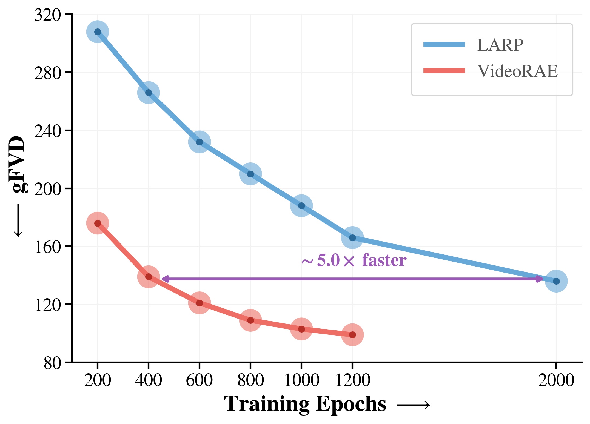
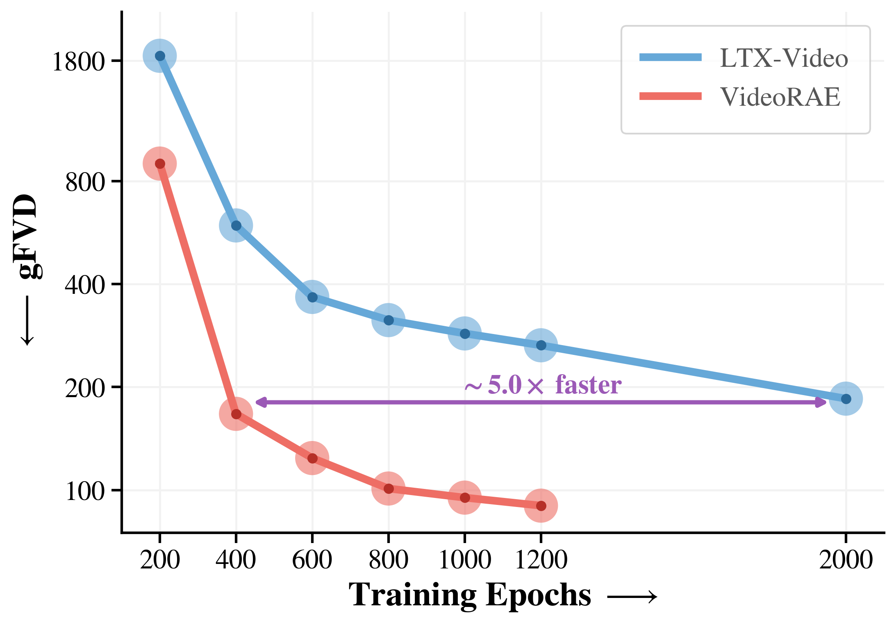
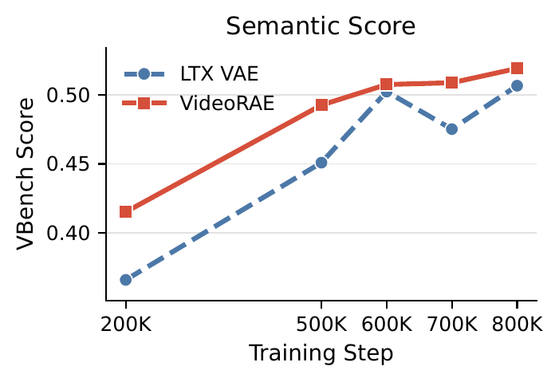
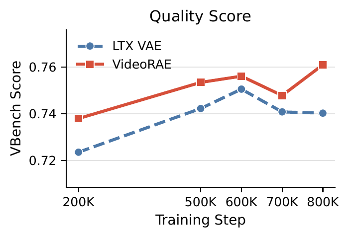
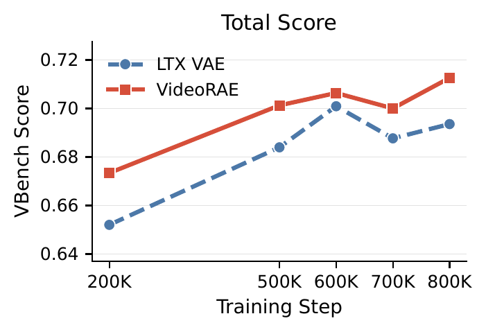

Training convergence speed comparison in AR (left) and DiT (right) generative modeling. VideoRAE converges approximately 5× faster than competing autoencoder baselines.

AR

DiT
Convergence comparison between VideoRAE and LTX-VAE on VBench.

Semantic Score

Quality Score

Total Score